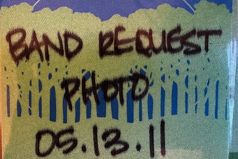

Dec. 12, 2024
My journey as a music photographer.
After discovering digital photography in 2006, my journey as a music photographer began. From learning the necessary techniques using a small point-and-shoot camera at local shows to photographing national artists and festivals, it has been an amazing ride. Come along as I share some of the highlights.
How I got started
I had managed to sneak my old camera into some concerts back in the day, but I didn't have a lens long enough to really capture the action. Plus, film photography could get expensive and I was just a starving college kid. When digitial cameras came out, the cost of taking pictures came down, and many artists began loosening restrictions on cameras at shows. I learned the necessary techniques by going to smaller shows where I could get close to the action.
When I booked a music cruise for the first time, I made it my mission to get good shots of as many of the artists as possible, so I would have something more personal to get autographed on the ship. Little did I know that cruise would lead to a meeting with an artist who would help me get my photography out of the "just a hobby" stage. From an all access pass on that cruise to my first photo pass to see the artist off the cruise, to photo passes to major festivals the artist was going to be at, I was able to elevate my skills and photograph many artist and eventually get published.

Dec. 18, 2007
Aerosmith
After several shows where I was trying to learn the craft, I had an amazing opportunity to take photos at a charity event that Steven Tyler was at...

Aug. 15, 2009
Disaster House
Getting to know the artists paid off! I was invited to see the band Slaughter film an episode of Disaster House for The DIY Channel...
May 7, 2011
M3 Festival 2011
Those band contacts paid off big when I was able to secure a photo pass for the M3 Festival in Columbia, MD in 2011. A major British publication picked up the photos for publication...